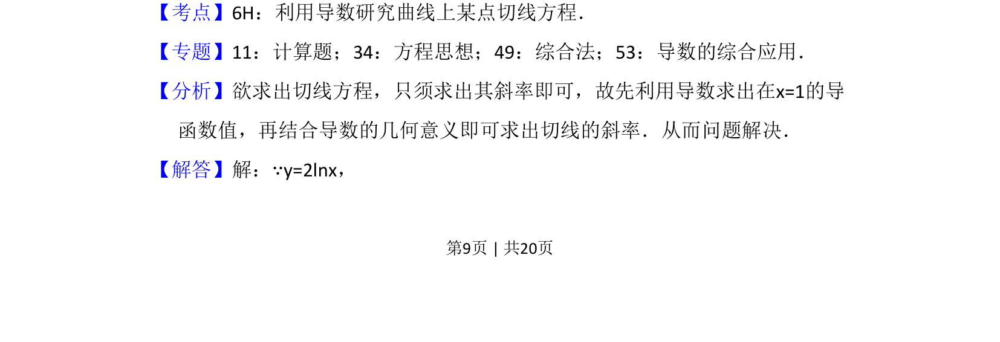
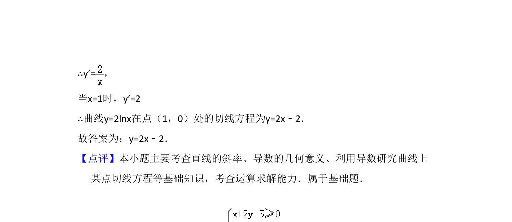

考点：导数几何意义 切线方程 对数函数求导
求曲线y=2lnx在点(1,0)处的切线方程，利用导数求斜率。


📄 原 PDF 第 9 页：
素材/真题/吉林/2008-2024·（吉林）数学高考真题/2018年高考数学试卷（文）（新课标Ⅱ）（解析卷）.pdf
13．（5分）曲线y=2lnx在点（1，0）处的切线方程为 y=2x﹣2 ．
【考点】6H：利用导数研究曲线上某点切线方程．菁优网版权所有 【专题】11：计算题；34：方程思想；49：综合法；53：导数的综合应用． 【分析】欲求出切线方程，只须求出其斜率即可，故先利用导数求出在x=1的导 函数值，再结合导数的几何意义即可求出切线的斜率．从而问题解决． 【解答】解：∵y=2lnx，